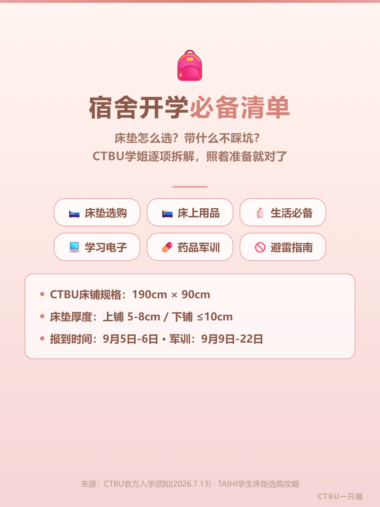
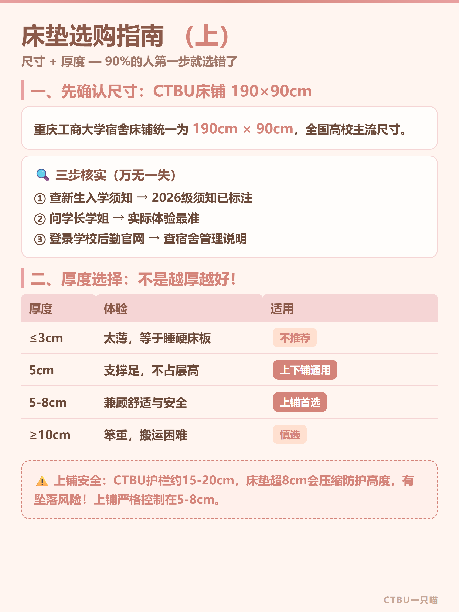
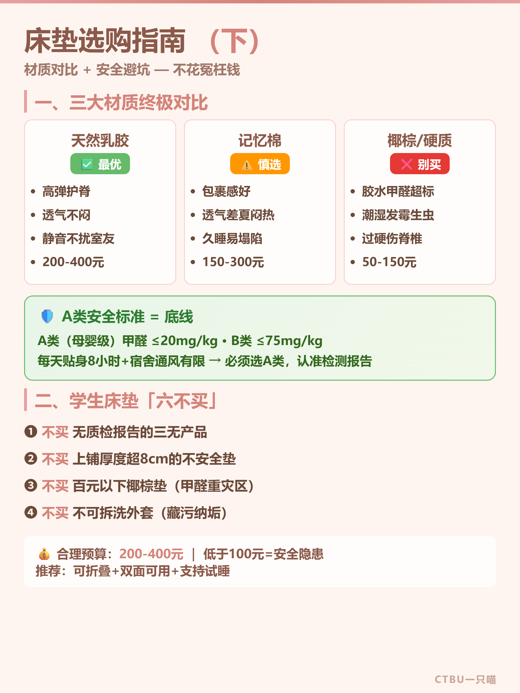
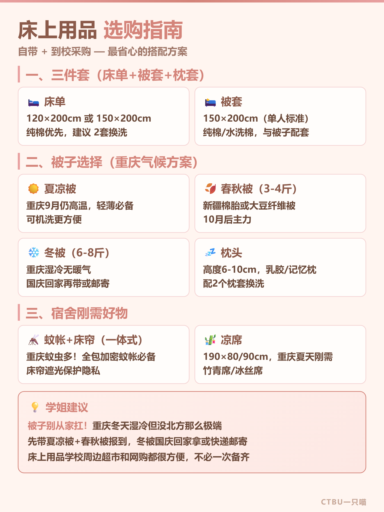
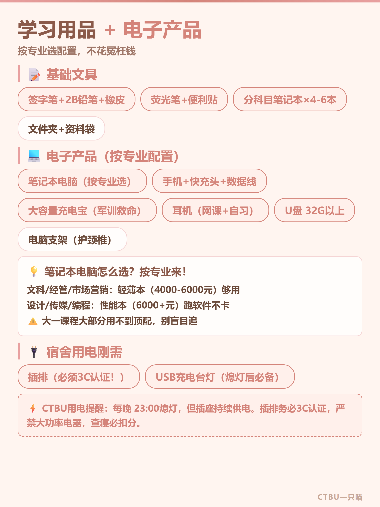
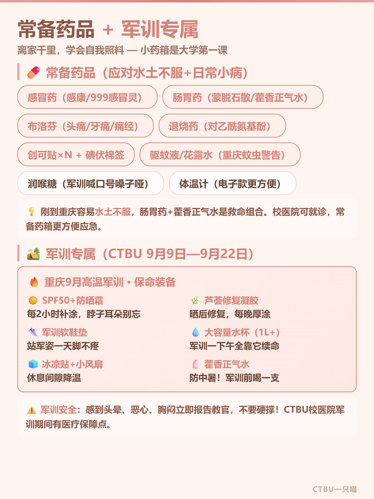
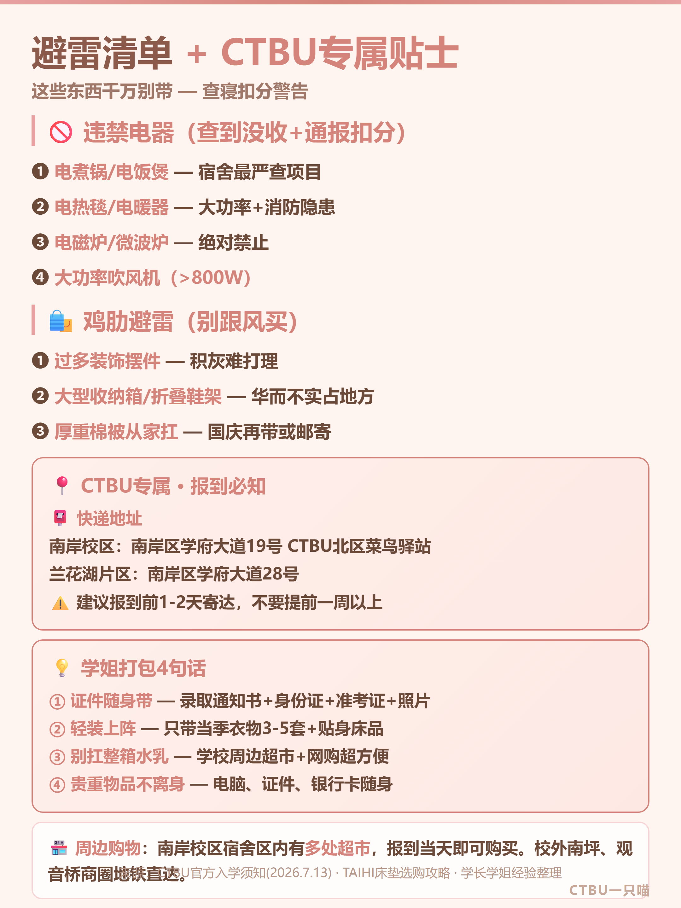

报到前一周最容易手忙脚乱：怕漏带、怕买错、怕行李箱塞爆。这份清单把床垫、床品、电子、药品、军训和避雷一次性说清楚，按模块准备，报到当天轻装上阵。







学姐碎碎念：被子别从家扛，冬被国庆回家再拿或快递；证件随身带，贵重物品不离身；报到前1-2天寄快递到学校，别提前一周堆菜鸟。清单在手，报到不慌。
床垫怎么选？带什么不踩坑？CTBU学姐逐项拆解，照着准备就对了。
报到前一周最容易手忙脚乱：怕漏带、怕买错、怕行李箱塞爆。这份清单把床垫、床品、电子、药品、军训和避雷一次性说清楚，按模块准备，报到当天轻装上阵。






